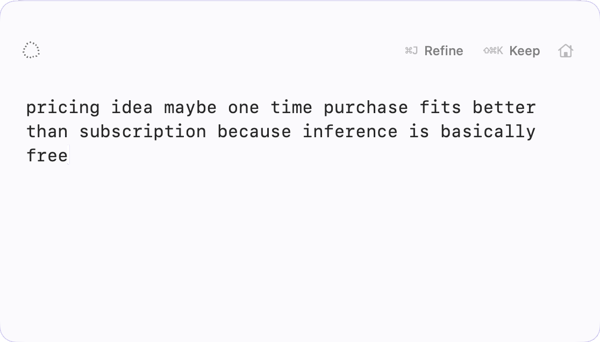
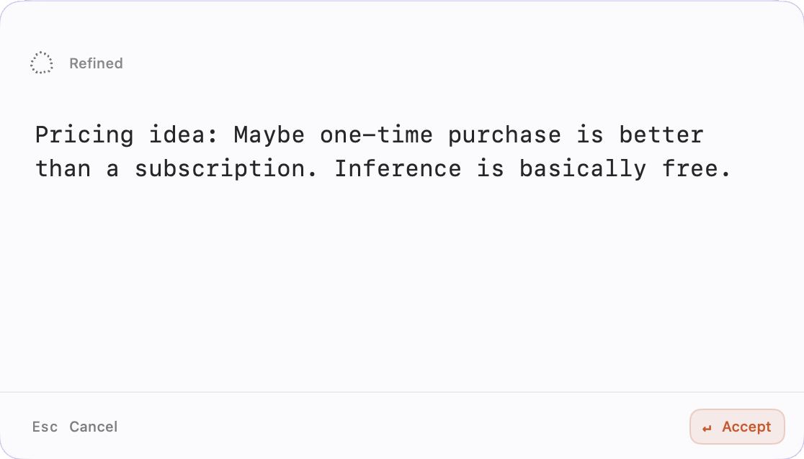
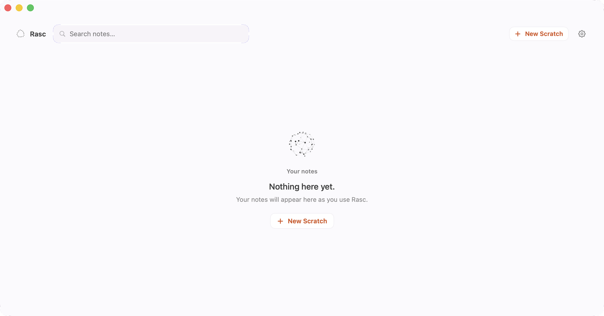

Capture
Write before you organize.
Press ⌥\ from anywhere. Rasc appears ready for whatever is on your mind.
No title, folder, or destination required.
Rasc for Mac
Capture a thought before you know what it should become. Refine it without a prompt. Keep what matters, then move on.
Request beta accessNative Mac app · No account · Local by default
Refine requires Apple Intelligence. The rest of Rasc does not.

Ideas arrive half-formed. A message you might send. Something you need to remember. A task that may become important. A sentence that still isn’t right.
They’re worth capturing, but not worth organizing yet.
Rasc gives unfinished thoughts somewhere to exist before you decide what they should become.
Capture
Press ⌥\ from anywhere. Rasc appears ready for whatever is on your mind.
No title, folder, or destination required.
Refine
When the wording needs work, press ⌘J.
Rasc refines the text on-device and shows you the result before anything changes.
No prompt. No tool picker. No AI chat.

Keep
When the thought feels finished, Keep it.
Rasc gets out of the way, the thought stays retrievable, and your next scratch starts fresh.
Capture → Refine → Keep. Nothing to organize up front.
No folders to set up. No prompt to write. No account to maintain.
And no need to decide where a thought belongs before you’ve even finished thinking it.
Unfinished or kept, your thoughts stay easy to recover.
Open Home or Search when you need one again — without turning Rasc into a system you have to maintain.

Notes are stored locally. Refine runs with Apple Foundation Models on-device. No account. No cloud AI.
Built as a real Mac app.
Refine uses Apple Foundation Models locally.
Install and use Rasc without creating an account.
Apple Intelligence is required for Refine only. Capture, Keep, Home, Search and the rest of Rasc remain available without it.
Capture them before they become notes. Shape them when they need it. Keep only what matters.
Request beta accessNative Mac app · No account · Local by default